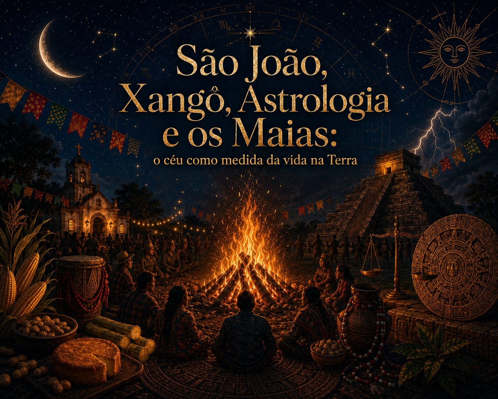

São João, Xangô, Astrologia e os Maias: o céu como medida da vida na Terra
 Elaine Imenes · 13 min de leitura
Elaine Imenes · 13 min de leitura

A conexão entre as festividades de São João, a força simbólica de Xangô, a leitura astrológica dos solstícios e a sabedoria astronômica da civilização maia não é como um simples acaso. Também não se trata de afirmar que culturas tão diferentes diziam exatamente a mesma coisa. O que existe entre elas é algo mais profundo: a experiência humana recorrente de olhar para o céu, reconhecer seus ritmos e traduzir essa ordem celeste em calendário, rito, agricultura, arquitetura, justiça e vida comunitária.
A alternância entre luz e escuridão, calor e frio, chuva e seca, plantio e colheita sempre exigiu da humanidade uma forma de leitura do tempo. Os movimentos aparentes do Sol, a sucessão das estações e os pontos extremos do ano, como os solstícios, não eram abstrações para os povos antigos. Eram acontecimentos concretos, capazes de definir quando plantar, quando colher, quando recolher, quando celebrar e quando pedir proteção.
Nesse sentido, a relação entre São João, Xangô, astrologia e civilização maia nasce de uma mesma necessidade fundamental: transformar o céu em linguagem para organizar a vida na Terra. As sociedades tradicionais frequentemente organizam o espaço, o tempo e os ritos a partir de uma correspondência entre a ordem cósmica e a vida humana (Eliade, 1992). O céu, portanto, não era apenas contemplado. Ele era lido, medido, celebrado e incorporado à cultura.
A matemática do céu: astrologia e solstícios
Por causa da inclinação do eixo da Terra, ao longo do ano o Sol parece deslocar-se em relação ao equador celeste. Em torno do dia 21 de junho, ele atinge sua máxima declinação ao norte. Esse ponto marca, astronomicamente, o solstício de junho.
Na astrologia tropical, esse momento corresponde ao ingresso do Sol em Câncer. Não se trata da constelação de Câncer no céu visível, mas de um marco matemático do zodíaco tropical, construído a partir da relação entre o percurso solar e as estações. A astrologia ocidental se desenvolveu historicamente em diálogo direto com a astronomia, com a matemática do céu e com a necessidade de organizar calendários e ciclos temporais (Campion, 2008).
Câncer inaugura um dos quatro pontos cardeais do ano astrológico, junto com Áries, Libra e Capricórnio. Esses signos marcam viradas de ciclo, mudanças de direção e reorganizações da experiência terrestre. Áries corresponde ao equinócio de março, Câncer ao solstício de junho, Libra ao equinócio de setembro e Capricórnio ao solstício de dezembro. São pontos de passagem, nos quais a luz muda de regime e a vida precisa se reorganizar.
No Hemisfério Norte, o ingresso do Sol em Câncer marca o solstício de verão, o dia mais longo do ano. No Hemisfério Sul, onde estamos, inaugura o solstício de inverno, com a noite mais longa e o dia mais curto. O mesmo fenômeno celeste produz experiências sazonais opostas, dependendo do lugar da Terra a partir do qual se observa. Essa diferença é essencial. Ela nos lembra que a astrologia não nasceu separada da observação concreta da natureza. Sua linguagem foi construída a partir da relação entre céu, tempo e vida. O Sol não era apenas um símbolo espiritual. Ele era o regulador dos ciclos de luz, calor, fertilidade e sobrevivência.
Por isso, o ingresso do Sol em Câncer carrega uma força simbólica tão particular. Câncer é um signo regido pela Lua, ligado à memória, à ancestralidade, à casa, ao alimento, à proteção e à continuidade da vida. Quando o Sol entra em Câncer, a luz encontra a linguagem da memória. O destino solar passa pelo território lunar, da origem, da bagagem emocional e dos vínculos que nos formam.
No Hemisfério Sul, essa entrada acontece no tempo do frio, da noite longa, do recolhimento e da necessidade de preservar o calor. A vida se volta para dentro. A casa, o fogo, a comida e a comunidade ganham centralidade. Não por acaso, é justamente nesse período que o Brasil celebra uma das festas mais importantes de seu calendário popular: São João.
Por que São João é celebrado em 24 de junho?
A escolha do dia 24 de junho para celebrar São João também não é casual. No calendário cristão, João Batista é uma das raras figuras cuja festa celebra o nascimento, e não a morte. A tradição fixou sua data seis meses antes do nascimento de Jesus, celebrado em 25 de dezembro, porque o Evangelho de Lucas apresenta João como aquele que nasce antes do Cristo e prepara o seu caminho. No texto bíblico, Maria recebe o anúncio da gestação de Jesus quando Isabel, mãe de João Batista, já está no sexto mês de gravidez (Bíblia, 2002, Lc 1,26-36; CNBB, 2018).
Essa organização litúrgica também dialoga profundamente com o calendário solar. No Hemisfério Norte, o nascimento de João Batista foi colocado logo depois do solstício de verão, quando os dias começam lentamente a diminuir. Já o nascimento de Cristo foi fixado logo depois do solstício de inverno, quando a luz começa novamente a crescer.
Essa escolha ganhou uma força simbólica enorme dentro do cristianismo. João é aquele que anuncia a chegada do Cristo, mas depois recua. No Evangelho, João Batista diz a célebre frase: “é necessário que ele cresça e que eu diminua”. E a natureza obedece exatamente a esse ritmo: depois da festa de São João, a claridade do sol começa a recuar; depois do Natal, ela ganha força novamente (Bíblia, 2002, Jo 3,30).
Assim, a data de São João reúne duas camadas: uma teológica, ligada ao nascimento daquele que prepara o caminho, e outra astronômica, ligada ao ponto máximo da luz no Hemisfério Norte. Quando essa festa chega ao Brasil, ela atravessa o Equador e passa a ser celebrada durante o nosso inverno. Com isso, ganha uma nova potência simbólica. A fogueira deixa de marcar apenas o excesso de luz do verão europeu e passa a responder à noite longa, ao frio e à necessidade de calor comunitário.
A tecnologia da fogueira: as raízes de São João
As festas juninas brasileiras têm origem em tradições europeias ligadas ao ciclo agrário e ao calendário cristão, especialmente às comemorações de Santo Antônio, São João e São Pedro, muito importantes no folclore brasileiro, especialmente sua relação com a fogueira, os costumes populares, as comidas de época e a vida comunitária (Cascudo, 1954).
Na Europa, as celebrações próximas ao solstício de verão já estavam associadas ao fogo, à fertilidade, à proteção e à força máxima da luz solar. Com a cristianização dessas práticas, antigas celebrações no ritmo da lavoura foram reorganizadas em torno dos santos do mês de junho, especialmente São João Batista. O cristianismo não simplesmente apagou os ritos anteriores. Em muitos casos, absorveu, ressignificou e integrou práticas já existentes ao seu próprio calendário (CNBB, 2018).
Quando essa tradição chega ao Brasil, ela encontra outro céu, outro clima, outro calendário agrícola e outra paisagem cultural. Aqui, junho não é o ápice do verão, mas o tempo do inverno no Hemisfério Sul. Ainda assim, a fogueira permanece como símbolo central. E talvez por isso ganhe ainda mais força: em vez de celebrar apenas o excesso da luz, ela responde à sua diminuição.
A fogueira junina é uma tecnologia ancestral. Ela é domínio do fogo. É calor no frio. É luz na noite. É proteção diante da escuridão. É ponto de encontro em torno do qual a comunidade se reúne.
Na cultura popular brasileira, a festa de São João também se liga ao milho, às comidas de época, às danças, às bandeirinhas, às promessas, aos casamentos simbólicos, às brincadeiras e às formas comunitárias de celebração. O milho, em especial, mostra como o calendário celeste se transforma em prática alimentar. Não se celebra apenas uma data religiosa. Celebra-se também a colheita, o sustento, a fartura possível e a inteligência de viver conforme os ciclos da terra.
A fogueira, nesse contexto, não é só uma lembrança de antigos rituais solares. Ela é o coração material da festa. Ao redor dela, a noite fria se torna reunião. O inverno se torna celebração. A escuridão se torna convivência.
O fogo como justiça e lei: a presença de Xangô
No Brasil, nenhuma tradição cultural permaneceu pura, isolada ou intacta assim como nós brasileiros, misturados. O calendário católico trazido pelos colonizadores encontrou as cosmologias africanas, os saberes indígenas, as práticas populares e as necessidades concretas de um território em formação. É desse encontro, muitas vezes marcado por violência, resistência e reinvenção, que nasce a complexidade simbólica das festas brasileiras. Nesse campo de cruzamentos, o ciclo junino também se aproxima da força de Xangô, divindade ligada ao poder, à justiça e ao domínio do fogo e do raio, elementos que revelam sua função civilizatória dentro da mitologia dos orixás (Prandi, 2001).
Em diferentes tradições afro-brasileiras, os sincretismos variam conforme a região, a casa religiosa e a linhagem de culto. Por isso, é importante não reduzir Xangô a uma equivalência fixa com um único santo católico. Ainda assim, em alguns contextos populares, especialmente no ciclo das festas de junho, a aproximação entre Xangô e santos como São João e São Pedro mostra a verdadeira força dessa fogueira: o fogo que ilumina, aquece e reúne também é o fogo que julga, ordena e revela.
Xangô representa o fogo civilizatório, aquele que estabelece limite, verdade e responsabilidade. Seu raio rompe a sombra. Seu trovão anuncia que há uma ordem a ser reconhecida. Sua justiça não é frieza abstrata, mas força que recoloca as coisas em seu devido lugar. Está longe de ser o fogo descontrolado da destruição como é visto por alguns desatentos.
Quando olhamos para a fogueira junina a partir dessa perspectiva, ela se torna imagem de axé, de energia vital em movimento. Não é mais uma apenas uma brincadeira. O fogo reúne a comunidade, mas também nos chama à reflexão. Ele aquece e ilumina, celebra a vida lembrando que todo novo ciclo precisa ser atravessado com consciência.
Nesse ponto, a relação entre São João e Xangô não deve ser reduzida a uma equivalência simples. O mais interessante é perceber como o calendário popular brasileiro é capaz de acolher múltiplas camadas de significado. A mesma fogueira pode carregar a memória europeia dos ritos solsticiais, a devoção católica a São João, a celebração da colheita do milho e a força afro-brasileira do fogo como justiça, axé e lei.
O céu marca o tempo, a terra oferece a colheita, a comunidade acende o fogo e Xangô lembra que não há ciclo novo sem responsabilidade diante da vida.
A precisão de pedra: a astronomia cultural maia
Muito antes dos calendários modernos, a civilização maia desenvolveu uma das mais sofisticadas tradições de observação celeste do mundo antigo. Para os maias, acompanhar o movimento do Sol, da Lua, de Vênus e de outros corpos celestes era parte da organização política, religiosa, agrícola e social.
A observação do céu nas culturas da Mesoamérica estava profundamente ligada à construção de calendários, à agricultura, à arquitetura cerimonial e à legitimação da ordem social (Aveni, 2001). Para os maias, o tempo não era apenas contado, ele era qualificado. Havia momentos adequados para plantar, governar, realizar cerimônias e renovar pactos entre comunidade, divindades e natureza.
A arquitetura maia expressa essa relação de forma impressionante. Cidades, templos, pirâmides e observatórios foram construídos em diálogo com os movimentos celestes. Em Chichén Itzá, por exemplo, a pirâmide de Kukulcán tornou-se famosa pelos efeitos de luz e sombra associados especialmente aos equinócios, quando a imagem da serpente parece descer pela escadaria. Além disso, diferentes edifícios mesoamericanos apresentam alinhamentos relacionados a eventos solares importantes, incluindo solstícios, passagens zenitais do Sol e ciclos agrícolas (Aveni, 2001).
O ponto central é que, para os maias, a pedra podia registrar o céu. A arquitetura era calendário, instrumento de observação e memória construída. O que para nós pode parecer apenas templo, para eles também era relógio, régua, arquivo e centro ritual. A preocupação com o registro não elimina o sagrado. Ao contrário, mostra que, em muitas culturas antigas, técnica e sacralidade não estavam separadas. Medir o céu era um ato religioso, político e prático ao mesmo tempo. A exatidão astronômica servia à agricultura, mas também à autoridade dos governantes, à realização dos ritos e à manutenção da ordem coletiva.
Assim como a astrologia ocidental antiga traduziu os ciclos solares em signos e calendários e as festas juninas brasileiras transformaram o solstício em comida, fogueira e celebração, os maias transformaram a observação celeste em cidade, pedra e cerimônia.
O céu como linguagem comum da humanidade
A força dessa comparação não está em dizer que São João, Xangô, astrologia e civilização maia são a mesma coisa. Definitivamente não são. Cada tradição possui sua história, sua cosmologia, sua linguagem e sua complexidade própria. O que os aproxima é algo mais elementar: todos revelam que a humanidade sempre precisou criar pontes entre a ordem do céu e a urgência da vida terrestre.
A astrologia fez isso por meio de uma linguagem simbólica baseada nos ciclos do Sol, da Lua e dos planetas. As festas de São João fizeram isso ao transformar a virada sazonal em celebração popular, fogo, alimento e comunidade. As tradições afro-brasileiras associadas a Xangô fizeram isso ao reconhecer no fogo uma força de justiça, axé e ordenação da vida. Os maias fizeram isso ao erguer cidades e templos capazes de acompanhar com rigor o movimento dos astros.
Em todos esses casos, o céu é leitura do mundo e não fuga. O ser humano olha para cima porque precisa viver melhor na Terra. Olha para o Sol para saber o tempo da colheita. Observa a noite para reconhecer os ciclos. Marca os extremos da luz para atravessar a escuridão. Acende a fogueira para lembrar que a vida depende de calor, alimento, consciência e comunidade.
No solstício de junho, a noite é maior no Hemisfério Sul. A luz diminui e o frio se instala. Talvez seja exatamente por isso que a fogueira de São João permaneça tão poderosa entre nós. Ela representa a materialização desse acontecimento celeste. Acendemos o fogo, reunimos pessoas e diante das incertezas do tempo, criamos um ritual que obedece ao calendário.
A astrologia chama esse momento de ingresso do Sol em Câncer. A cultura popular o celebra com São João. As tradições afro-brasileiras podem reconhecer nele a potência do fogo de Xangô. A sabedoria maia nos lembra que o céu também pode ser escrito em pedra, cálculo e arquitetura.
No fundo, todas essas linguagens dizem algo sobre a mesma condição humana: precisamos ler o tempo para continuar vivendo. Olhar para o céu nos faz entender melhor quem somos, nos coloca em conexão com o algo maior que habita em nós.
Quando a noite fica mais longa, a resposta mais antiga talvez ainda seja a mais atual: reunir as pessoas, acender o fogo, honrar a memória e preparar o próximo ciclo.
Referências
AVENI, Anthony F. Skywatchers: a revised and updated version of Skywatchers of Ancient Mexico. Rev. ed. Austin: University of Texas Press, 2001.
BÍBLIA. Português. Bíblia de Jerusalém. Nova ed. rev. e ampl. São Paulo: Paulus, 2002.
CAMPION, Nicholas. A history of western astrology: volume I: the ancient and classical worlds. London: Continuum, 2008.
CASCUDO, Luís da Câmara. Dicionário do folclore brasileiro. Rio de Janeiro: Instituto Nacional do Livro, 1954.
CONFERÊNCIA NACIONAL DOS BISPOS DO BRASIL. 24 de junho: dia de São João Batista, o precursor de Jesus Cristo. Brasília, DF: CNBB, 22 jun. 2018. Disponível em: https://www.cnbb.org.br/24-de-junho-dia-de-sao-joao-batista-o-precursor-de-jesus-cristo/. Acesso em: 24 jun. 2026.
ELIADE, Mircea. O sagrado e o profano: a essência das religiões. Tradução de Rogério Fernandes. São Paulo: Martins Fontes, 1992.
PRANDI, Reginaldo. Mitologia dos orixás. São Paulo: Companhia das Letras, 2001.